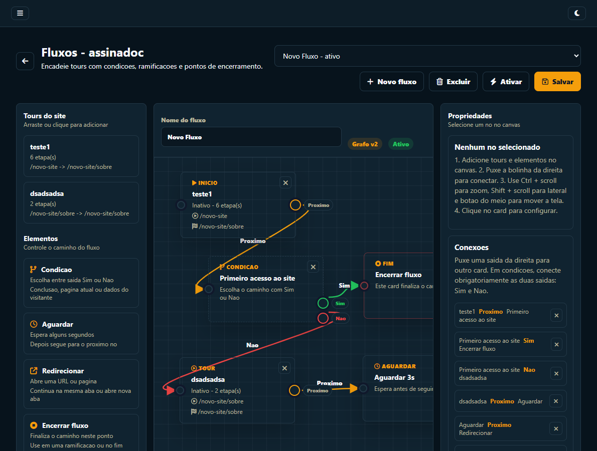
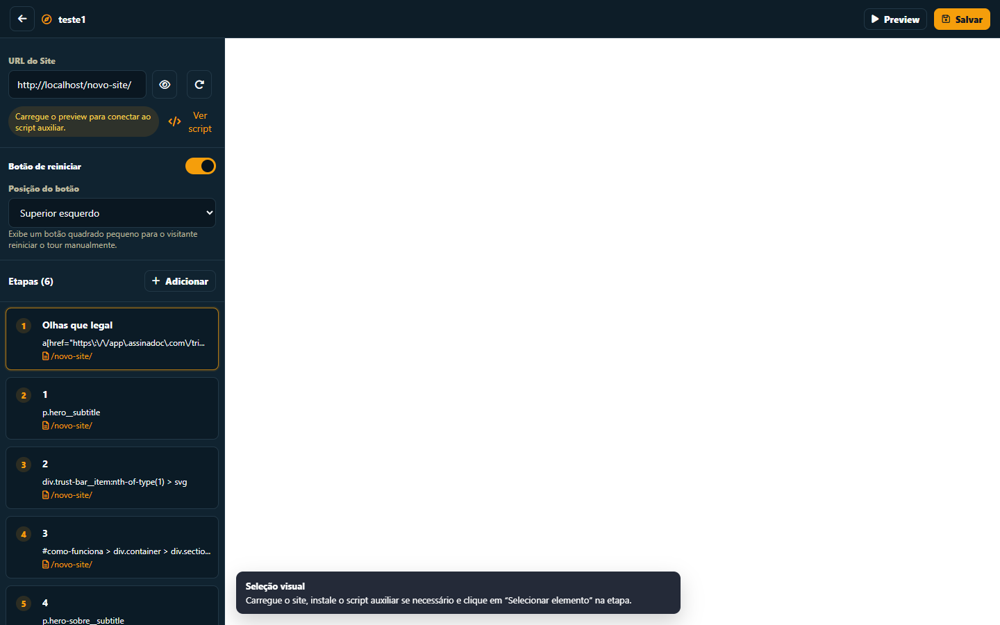
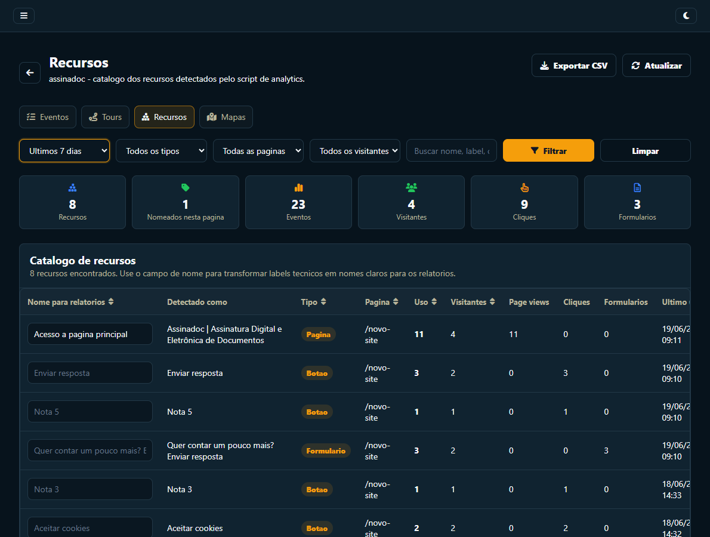
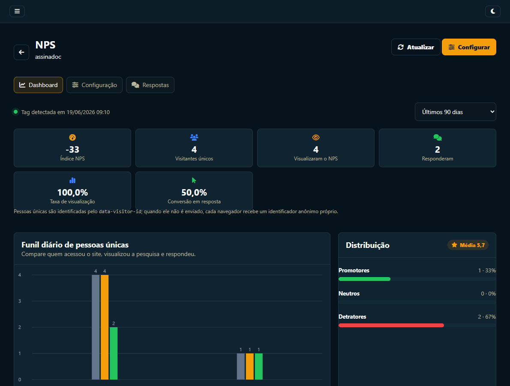
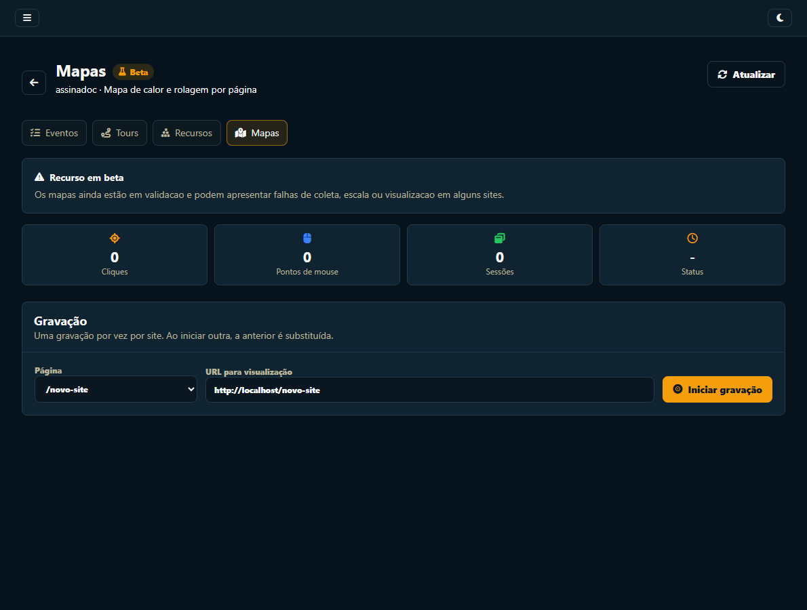
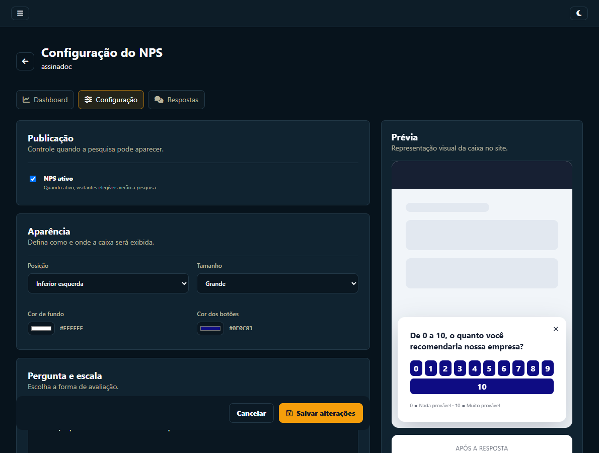

↗
Ensine dentro do contexto
Mostre o próximo passo exatamente onde a ação acontece, com destaque visual, imagens, vídeo e avanço por clique real no elemento.
Onboarding, adoção e voz do cliente
Crie tours guiados, conecte jornadas com regras, descubra como cada recurso é usado e colete NPS — tudo no mesmo painel, sem abrir uma nova tarefa para o time de desenvolvimento.

Mais do que product tours
O BeeTour ajuda times de produto, customer success, suporte e operações a ensinar, segmentar e medir sem transformar cada ajuste de onboarding em um novo ciclo de desenvolvimento.
Mostre o próximo passo exatamente onde a ação acontece, com destaque visual, imagens, vídeo e avanço por clique real no elemento.
Una tours de páginas diferentes e decida o caminho por conclusão, primeiro acesso, página atual, e-mail ou tags do visitante.
Veja conclusão e abandono dos tours, uso de recursos, cliques, formulários, page views, respostas de NPS e comportamento visual.
Seu time de produto cria e atualiza a experiência. Os desenvolvedores continuam focados no produto.
Começar no plano grátisTour guiado sem código
Crie um tutorial guiado simples em minutos ou monte uma experiência de onboarding que atravessa páginas, dispositivos e diferentes perfis de usuário.
Depois da instalação inicial, produto, CS ou suporte criam e alteram tours sem escrever código e sem colocar cada ajuste na fila dos desenvolvedores.

Arraste tours e elementos para o canvas, conecte os nós e crie caminhos diferentes de acordo com o contexto do visitante.
Product analytics acionável
A tag do BeeTour detecta páginas, botões, links, formulários e interações. Você transforma labels técnicos em nomes claros e acompanha o que realmente está sendo usado.




Veja o que os usuários fazem e transforme os dados em melhorias de onboarding.
Ativar analytics no plano grátisVoz do cliente no contexto
Configure pergunta, escala, aparência, recorrência e mensagens por faixa. Depois da resposta, direcione promotores, neutros e detratores para e-mail, WhatsApp ou um link específico.

Uma instalação, vários recursos
Identifique o visitante com ID, e-mail e metadados opcionais. Essas informações podem alimentar filtros, relatórios e condições dos fluxos.
Criar uma conta grátis →<script
src="https://app.beetour.com.br/embed/runtime.js"
data-site="SEU_SITE_ID"
data-visitor-id="12345"
data-email="cliente@empresa.com"
data-meta='{"plano":"pro"}'
defer></script>Escolha com contexto
Comece gratuitamente e entregue onboarding sem consumir a agenda do time técnico. Quando precisar escalar, avance com uma operação mais competitiva.
Crie e altere tours sem conhecimento de código. Produto, CS e suporte ganham autonomia sem alocar programadores a cada ajuste.
BeeTour para quem usa Bootstrap Tour →Tenha tours, fluxos em grafo, NPS, analytics de recursos e mapas em uma operação brasileira com entrada gratuita e custo mais competitivo.
Comparar com seu cenário →Evite começar por uma plataforma enterprise de preço sob consulta. O BeeTour entrega o núcleo de onboarding e analytics com plano grátis e evolução acessível.
Conhecer a abordagem BeeTour →Compare usando o seu próprio produto — sem cartão e sem compromisso.
Começar grátis agoraAutonomia para o time inteiro
Crie onboarding por perfil, destaque novidades e acompanhe a conclusão.
Meça adoção, encontre recursos ignorados e observe mapas de comportamento.
Transforme dúvidas recorrentes em instruções dentro da própria interface.
Padronize processos e conduza tarefas com menos treinamento manual.
Dê autonomia a quem entende a jornada e preserve o foco de quem desenvolve o produto.
Levar o BeeTour para meu timeComece pequeno, evolua com o produto
O plano Grátis inclui 1 site, 1 tour e até 5 etapas. Planos avançados ampliam limites para sua operação.
Perguntas frequentes
Se a sua dúvida não estiver aqui, fale com a equipe pelo suporte dentro da plataforma.
É um tutorial interativo exibido dentro do site ou sistema. O tour destaca elementos e conduz o usuário por tarefas, recursos ou etapas de onboarding.
Não. Depois que a tag é instalada, o conteúdo e a estrutura dos tours podem ser criados visualmente pelo painel.
Sim. Uma etapa registra o caminho da página, e os fluxos conectam tours, condições, esperas, redirecionamentos e finais em jornadas multipágina.
Sim. É possível controlar dispositivos e criar condições com primeiro acesso, conclusão, página atual, e-mail e metadados enviados pela tag.
Eventos de tours e fluxos, page views, cliques, formulários, recursos detectados, visitantes, sessões, NPS e dados de mapas quando uma gravação está ativa.
Sim para equipes que querem manter tutoriais fora do código e adicionar editor visual, gestão, jornadas condicionais e métricas.
Você pode descobrir o encaixe do BeeTour criando o primeiro tour agora.
Criar conta no plano grátisSeu produto já sabe o que fazer